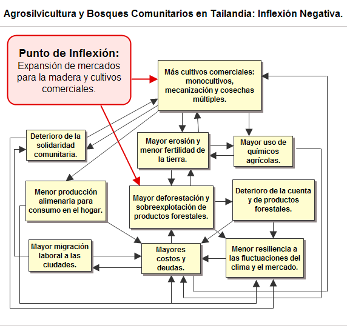
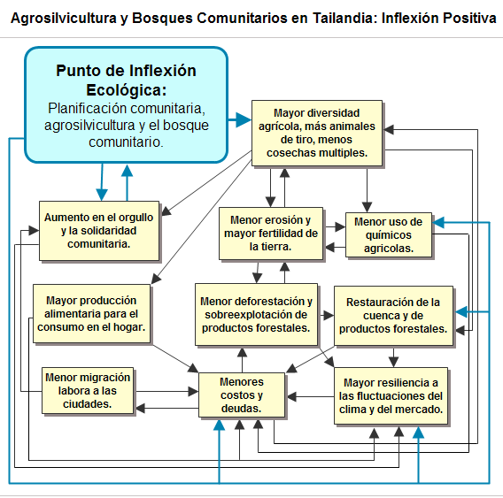
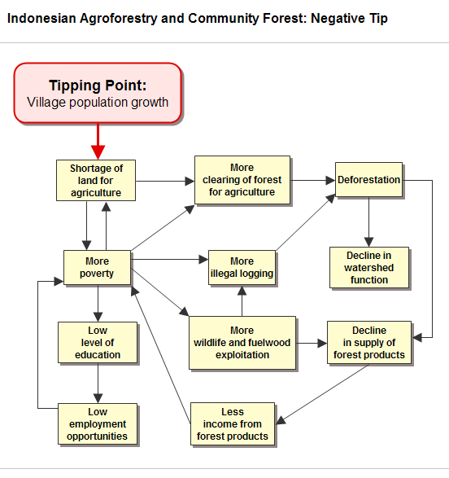

|
 |
 |
Puntos de
Inflexión Ecológica
- Cómo funcionan?
- Transformando círculos viciosos a círculos virtuosos
- Ingredientes para el éxito
- Elaboren sus propios Puntos de Inflexión Ecológica
Historias por Región
Historias por Tema
- Agricultura
- Agua y Cuencas
- Bosques
- Ecosistemas Urbanos
- Educación
- Energía
- Negocios
- Pesquerías
- Salud Pública
Videos Cortos
- Salvando un arrecife coral y una pesquería
(Filipinas) - Revitalizando vecindades urbanas con jardines comunitarios
(Nueva York) - Revirtiendo la deforestación tropical con bosques comunitarios
(Thailandia) - Rellenando aguas subterráneas con captación pluvial
(Rajastán, India) - Escapando la trampa de pesticidas
(India)
Explicando el Éxito
- Salvando un arrecife coral y una pesquería
(Filipinas) - Revitalizando vecindades urbanas con jardines comunitarios
(Nueva York) - Revirtiendo la deforestación tropical con bosques comunitarios
(Thailandia) - Rellenando aguas subterráneas con captación pluvial
(Rajastán, India) - Escapando la trampa de pesticidas
(India)

Ecología Humana: Presenta los principios de la ecología humana que sirven de fundamento a los Puntos de Inflexión Ecológica
La Aplicación de Puntos de Inflexión Ecológica para Revertir la Deforestación en los Trópicos
- Autor: Gerry Marten
Los Puntos de Inflexión Ecológica son palancas que redirigen el deterioro ambiental hacia la restauración y la sustentabilidad. El mecanismo central es la reversión de círculos viciosos que impulsan el deterioro. Solo es posible revertir el deterioro si los mismos círculos viciosos son revertidos. Revertirlos puede ser complicado, pero si no se logra el alivio solo será temporal.
Los círculos viciosos que impulsan el deterioro y las palancas que lo revierten pueden ser observados en historias de éxitos ambientales. ¿Como pueden encontrarse las palancas si aún no se ha dado la reversión? Las historias exitosas nos sirven de modelos para la región circundante, donde funcionara esencialmente la misma palanca. ¿Puede usarse el mismo modelo para forjar palancas en lugares mas distantes, con el mismo problema, que en algunas formas son similares y en otras distintas al sitio del éxito original? El ejemplo a continuación – que trata la deforestación en los trópicos – nos muestra como la atención explícita a los círculos viciosos que impulsan el deterioro en dos sitios distintos, puede ayudarnos a extrapolar las lecciones de un sitio a otro.
The first location, the place with the success story, is Khao Din village in Nakhon Sawan province, Thailand. Khao Din created an EcoTipping Point lever to reverse deforestation, and its success replicated to the surrounding area. Khao Din’s story is presented below, first as a narrative and then with feedback diagrams that show how the vicious cycles were reversed.
The second location, the one where deforestation is still in full swing, is Ampreng village in North Sulawesi, Indonesia. Paula Manginsela (Sam Ratulangi University) has studied the deforestation problem there and compiled ideas on what to do about it. Ampreng has much in common with Khao Din, but the two villages are also different in many ways.
While EcoTipping Points can be applied to any kind of decline, reversing tropical deforestation is particularly significant because:
- Deforestation is proceeding at a devastating pace throughout the tropics.
- Reversal of deforestation restores watersheds and local ecosystem services ranging from water supply and flood control to biodiversity conservation and the supply of forest products.
- As a consequence, people who are driven into poverty by degradation of the forest ecosystem on which they depend can ascend from poverty as the forest ecosystem recovers.
- Halting the release of carbon due to deforestation, and sequestering carbon with reforestation, are ecosystem services of global significance for reducing climate change.
Khao Din Village (Nakhon Sawan, Thailand) - The Narrative
In the 1960’s Thailand was ready to burst out of its third-world, agriculturally-based economy and become a modern, prosperous, industrialized nation. The government launched a Western growth model with export-led development as its centerpiece. The policy was to utilize forests and agricultural production as resources for foreign exchange revenue to generate investment in a growing manufacturing sector.
And if overall growth in gross domestic product is your yardstick, the approach was a raging success. But for small-scale farmer Thanawm Chuwaingan and millions like him, the story was entirely different.
In 1954 Thanawm migrated from the impoverished Khorat Plateau of Northeast Thailand to Khao Din village in Nakhon Sawan province, about 225 kilometers north of Bangkok, to stake a claim on newly opened forest land. According to Thanawm, “It was easy to find food. There were many edible plants and vegetables growing wild near our houses. The fish in the streams were easy to catch. There were also plenty of wild animals, like boars, deer, tigers, and elephants.”
With abundance at hand and a cooperative spirit in the village, life was good. But things started to change in the 1960’s and 1970’s. The government wanted the farmers to modernize and grow cash crops such as rice, maize, jute, and cassava for export. Forests were cut to sell the timber and expand the farmland. The government provided loans intended for inputs such as hybrid seed, chemical fertilizers, pesticides, and farm equipment.
But the farmers, who never had so much money in their pockets before, also used the loans to buy radios, motorcycles and other modern merchandise. And after the initial flush of quick cash, crop prices began to decline because so many farmers were growing the same thing. People started to fall deeper into debt.
To try and make good on their debts, villagers cut the last remnants of forest to expand their fields, since what they had was no longer enough to make ends meet. “By that time, there were virtually no trees left on the hillsides. It became hotter and drier.” The soil, which had been fertile for years, was eroded and became progressively harder with continued use of chemical fertilizers. Rainwater just ran off. Crop yields declined.
In a relatively few years, Thanawm and his family had gone from near Eden-like abundance and prosperity to environmental ruin and a hardscrabble existence typified by hunger, poverty and social disintegration.
People had to look for work in the cities during the dry season in order to pay their debts. Families were split up. Wide-scale seasonal migration in search of urban jobs led to the disintegration of communities. Villages increasingly became populated by the young and elderly. Juvenile delinquency, previously unheard of, emerged as communities were rapidly torn from their traditional social norms.
“Unlike in the past when the community was close-knit, and people really cared for one another, everyone was now worried about their own fields and their own family’s problems. Before, if anyone had a problem, others would be quick to offer their help. But now, our communities began to fall apart. For the first time ever, we began to have psychological and social problems. There was little trust and less cooperation.”
In short, the village was on what appeared to be an irreversible ecological and social slide. But fortunately the story does not end there. Thanawm and his fellow villagers made some key changes which set their village and its environmental support system in a positive direction. They created an EcoTipping Point - a combination of sensible environmental technology and the social organization to put it into use. The EcoTipping Point reversed the decline, restored ecological health, and forged a stronger, more sustainable society.
It began in 1986, when a team from the aid group Save the Children US was sent to Khao Din village by the Thai government. The district had become one of the nation’s poorest by that time. Rather than simply distributing aid from donors, which had been the pattern under the government’s modernization program, the Save the Children team awakened villagers’ awareness about the true source of their predicaments, and then helped them to devise their own solutions.
At first, the villagers were suspicious. Trust grew slowly, through long and at times arduous discussions, during which the aid workers asked villagers questions that enabled them to retrace the steps to their plight. This led to some startling realizations.
Ultimately, villagers recognized that it was they who were primarily responsible for bringing about their problems, through the decisions they had made on how to use and manage their local resources. Remembering what the land and local natural resources were like when they arrived, people kept saying: “We never thought this could happen. We couldn’t imagine this place of abundance would become a desert. My God, what have we done?”
This collective awareness was the first step in the EcoTipping Point process. It prompted the villagers to consider what they could do to change the situation, based on their new understanding of the problem and its causes.
The second step came when villagers and the project team formulated an ecologically viable strategy for their community. It began with the realization that it made no sense to “put all of their eggs in one basket,” as had been the case with the high-input monoculture cash crop systems. They designed diversified “agroforestry” systems in which trees and crops were interspersed on the same field, resembling in many ways the structure of the natural forest. They also decided to restore their damaged forests with local community protection and management.
Agroforestry was not new to the local farmers. Their now largely abandoned traditional subsistence systems had incorporated many of the same elements. It usually involves a pond or canal as a year-round source of water for crop irrigation, along with fish and edible aquatic plants. There is a broad variety of food crops such as chilies, pumpkin, beans, and other vegetables, herbs like cilantro, lemon grass, galangal, basil and mint, and fruits such as mangos, jackfruit, lime, longan, bananas, and papayas. Trees supply fruits, nuts, fuelwood, and building materials. Everything together provides a healthy diet and supplementary income.
The agroforestry drastically cut household food costs, as well as agricultural input costs because “nature did much of the work.” It simultaneously restored some of the ecological stability to the land that forests had maintained for millennia. Year-round food security increased dramatically. If one crop failed, others would succeed.
At first, only those who could afford to try something different were able to set aside some of their land and energy for the venture. But what started on eight acres of demonstration plots grew year-by-year as more villagers adopted similar approaches on their own farms.
It is more than 10 years since Save the Children finished its project in Khao Din, now a thriving community of 2500 inhabitants. Twenty-five villages in Nakhon Sawan province are following Khao Din’s example, pursuing a variety of locally designed forms of agroforestry and sustainable agriculture on land covering thousands of acres. Recreating natural ecological processes on the farms has reestablished recycling processes similar to those in natural ecosystems. Soil erosion and degradation due to overuse of chemicals have been reversed.
Natural forests, largely devastated by misuse, are regenerating over an even larger area. The restored forests are repairing damaged watersheds. Streams, along with a variety of animals long thought to be extinct, have reemerged. An area which, not long ago, had resembled a desert landscape is now a site for ecotourism. Additional income comes from mushrooms and edible forest vegetables. Migration to Bangkok has declined, and the socially disruptive trends caused by urban migration and unchecked materialism are now under control.
Thanawm summed it up, “Most of all, in terms of change, was the change in people’s thinking. We are learning together as a community, sharing knowledge with each other. People no longer think: ‘we are in trouble, and we can do nothing about it.’”
“We know now that with some careful thinking and a lot of shared effort, we can solve our problems, and fix what is broken. This has given our communities a tremendous boost. And it is also something that has really enabled us to influence others, whose own problems are very distressing to them, just as it was for us before.”
“Even though we don’t have much money, we’re happy. We have friends who come to visit and we have enough food for them.”
EcoTipping Point Feedback Analysis for Khao Din
It was a time when farmers from Northeast Thailand were moving into this relatively uninhabited region, seeking a better life. Commercial logging concessions opened up new land for farming, accommodating landless families and a growing population. The process was accelerated by expanding domestic and foreign markets for timber, rice, maize, and cassava, accompanied by government policies that encouraged agricultural exports in order to increase government revenues.
Nakhon Sawan seemed a land of opportunity, but soon the landscape and the community were caught in a downward spiral that threatened to close off the prospects for a better life the settlers had sought. It happened because of a chain of events initially set in motion by expanding markets for timber and cash crops (see diagram below):
- Expanding agricultural markets encouraged a shift from subsistence polyculture to monocultures of the most profitable cash crops.
- Monoculture encouraged mechanization and a diminishing role for traditional draft animals (which provided manure).
- Cash cropping encouraged multiple cropping (i.e., more than one crop a year), meaning more time devoted to farm work and less time to contribute to the community support system.
- Chemical fertilizer use was increased to achieve higher yields and compensate for a diminished supply of animal manure. Chemical pesticide use increased because monocultures generally have more severe pest problems than polycultures.
- Farm land fertility declined due to intensive use, soil erosion, and chemical burden in the soil.
- Family food expenses increased as cash cropping provided less food for home consumption.
- Debt increased due to expenses for chemical fertilizers, pesticides, mechanical tillage, and a generally perceived need for greater material consumption, along with increasing family expenses for food, medicine, and other essential commodities.
- Farmers expanded the amount of land they were farming to earn more money to cover increasing expenses for agricultural inputs and service their debts. Debt also increased the need for income from commercial logging and stimulated overexploitation of forest products.
- Deforestation increased soil erosion and reduced the hydrological integrity of the watershed, reducing infiltration of rainwater to subsurface aquifers. Water shortages threatened the viability of human settlements while reducing agricultural production and the quantity and diversity of forest products for sale or home consumption.
- A less reliable water supply and more floods from a deteriorating watershed, greater dependence on food purchases for family consumption, and deterioration of the community support system eroded food security, financial security, and resilience to stresses such as downturns in farm income due to bad weather or market fluctuations.
- Debt forced able-bodied men (and later women) to migrate to cities, at first seasonally and later year-round, seeking work to supplement family incomes. This eroded community solidarity and traditional support systems, while increasing the cost of farming as it became necessary to mechanize further or hire labor from outside the family.
- Community fragmentation and impoverishment increased usury and debt, along with dysfunctional social behavior such as thievery.
The result was an interconnected system of mutually reinforcing vicious cycles that drove the landscape and the community into progressively greater decline.

The EcoTipping Point - the lever that turned things around - was the introduction of agroforestry and establishment of a community-managed forest, accompanied by a process of community dialogue and problem solving that enabled successful implementation.
Agroforestry offered the following benefits:
- More income and opportunity for debt reduction if the agroforestry was commercially successful;
- “Weeds” around tree crops protected the soil from erosion and helped maintain soil fertility;
- Diversity of agroforestry provided both cash crops and food for home consumption;
- Less mechanization and a greater role for draft animals and their manure reduced the need for chemical fertilizer;
- Less chemical fertilizers and pesticides reduced input costs;
- Lower labor inputs associated with agroforestry allowed time to contribute to the community support system;
- The diversity of agroforestry was more resilient to weather and market fluctuations.
Community management of the forest as an integral part of the landscape provided:
- A healthy watershed for reliable water supply, protection from soil erosion, and flood prevention;
- A more secure supply of forest products for cash and home consumption.
Reversal of the vicious cycles set in motion a new course toward a healthier and more productive landscape and an economically and socially healthier community.

Be sure to read the complete story of agroforestry and community forests in Nakhon Sawan, Thailand.
Ampreng Village (Sulawesi, Indonesia)
Ampreng village is trapped in a vicious cycle of poverty and natural resource degradation typical for the region - a downward spiral driven by a slow but steady increase in the village population (see diagram below):
- Population growth generates a shortage of land for agriculture as families distribute their land among offspring. In addition, villagers lose land when forced to sell some of it to cover large expenses such as hospital costs, weddings, or funerals. As household land holdings decline, income from agriculture also declines, pushing villagers further into poverty.
- Poverty, a shortage of agricultural land, and limited employment opportunities outside agriculture force villagers to clear forest for agriculture and overexploit forest products such as honey and wild fruits, vegetables, and animals for cash income. Men engage in illegal logging and hunting, while women collect fodder and fuelwood from the forest.
- Illegal logging and clearing of forest for agriculture degrade the watershed and its hydrological capacity. As a consequence, there is more soil erosion, less capture of rainfall to provide a reliable year-round water supply, and more floods and landslides.
- Overexploitation of forest products reduces their supply. Income from forest products declines, especially for women, who depend more on forest products than men to meet their family’s basic needs. The decline in income from forest products contributes further to poverty, completing a vicious cycle of poverty, overexploitation of forest resources, decline in forest resources, and more poverty.
- Poverty traps villagers at a low level of education because they lack the money for educational expenses. Low education limits employment opportunities, thereby completing a vicious cycle that further reinforces poverty.
- In an attempt to increase their income, villagers intensify their farming; for example, more crops per year, shorter fallow periods, and heavier use of chemical fertilizer and pesticides. It works at first, but pest problems and soil degradation due to intensive farming eventually nullify the gains, forcing villagers to spend more and more on expensive farm inputs, further contributing to their poverty. (This effect is not shown in the diagram.)

Application of EcoTipping Point Analysis to Ampreng Village
The challenge of EcoTipping Point analysis is to devise a lever that connects to the vicious cycles with sufficient force to turn them around. In Paula Manginsela’s opinion, the lever that could enable Ampreng village to break out of its downward spiral of poverty and resource degradation is a package of education, training, and facilitation to:
- redesign village farming systems to be more ecologically sustainable while providing more for basic family needs and high-value products for cash income;
- expand home industry and develop local processing of agricultural and forest products.
This intervention can set in motion a cascade of changes that reverse the vicious cycles in the diagram above, converting them to virtuous cycles that restore natural resources and reduce poverty (see diagram below):
- Education and facilitation for community awareness and strategic planning help villagers to expand home industries, develop local processing of agricultural and forest products, and in general gain access to a broader range of employment.
- The education and facilitation also help villagers to develop environmentally sustainable farming systems that provide for household needs while generating cash income. Central to the farming system strategy is agroforestry: a combination of multi-purpose and high-value trees with crops and livestock. Agroforestry increases plant cover and rehabilitates forest land cleared by illegal logging and expansion of agriculture into the forest. Agroforestry also provides food and other materials for home consumption at the same time it generates income from the sale of agroforestry products.
- Poverty is reduced by income from local industry and the sale of agroforestry products. Poverty is also reduced because agroforestry provides a variety of foods and other materials for household needs, reducing household cash expenses for those needs. Because agroforestry has fewer pest problems and does not degrade the soil, inputs such as chemical fertilizers and pesticides are reduced, contributing further to the reduction of poverty.
- Less poverty leads to less illegal logging, less clearing of forest land for farming, and less overexploitation of forest products.
- Recovery of the forest and its products provides more food and other materials for home consumption as well as income from their sale. Income from forest products completes a virtuous cycle of less poverty, restoration of the forest and its resources, and even less poverty.
- Forest restoration reduces erosion and improves the forest’s watershed capacity, improving the water supply and reducing floods and landsides.
- Decline in poverty increases the ability of people to provide education for their children, reversing the vicious cycle of low education and poverty.

Conclusions
Khao Din and Ampreng villages are similar in many ways and different in others. They both rely on agriculture and forest products for household needs and cash income. Both fell into a downward spiral of deforestation and poverty. Khao Din broke out of the spiral. Ampreng has yet to do so, but Kao Din’s example and EcoTipping Points provide the framework for a strategy at Ampreng.
The drivers for the downward spiral are somewhat different in Khao Din and Ampreng. The primary driver in Ampreng is population growth. Though population growth is also a driver in Khao Din, the negative tipping point there was the expanding export market for timber and cash crops. The result was the same in both places - a system of interconnected and mutually reinforcing vicious cycles.
The application of EcoTipping Point analysis to Ampreng village shows how lessons from a success story in one place can be applied to another. The main lesson is the central role of vicious cycles.
What does it take to reverse the vicious cycles? Khao Din’s experience points to the following ingredients:
- Outside stimulation and facilitation. In-depth awareness is the first step. The Save the Children team worked with Khao Din villagers to achieve a shared community understanding of the situation and proceeded with technical support to expand community awareness of possible actions to deal with it.
- “Social commons for ecological commons”. It’s all about community. Khao Din’s degradation of watershed and farm lands was a “Tragedy of the Commons” that could be resolved only by community action. A key feature of the success in Khao Din was genuine community participation in their decisions.
- “Letting nature do the work.” Forest protection allowed the healing processes of nature to restore the watershed to ecological health. Agroforestry requires a minimum of expensive inputs because it mimics the structure and function of natural forest ecosystems, which have the ability to maintain themselves.
- Social and ecological diversity. Diversity is a resource that expands choices. The more choices, the greater the prospects for some that work well. Save the Children brought new ideas to Khao Din that expanded their choices. Natural diversity came into play when forest protection led to rapid restoration, because remnants of the original healthy forest were on hand to seed the process. An important part of the diversity at Khao Din was social and ecological “memory”. Khao din drew on traditional knowledge and practices, in combination with modern agroforestry, to design farming systems that met the needs of modern times with the sustainability of time-tested tradition.
- Rapid feedback. “Success breeds success.” Quick returns convinced villagers they were pursuing a winning strategy, encouraging them to amplify and sustain their efforts. Further success created community pride that consolidated community commitment.
- Building resilience. Virtuous cycles (created by reversing the vicious cycles), and new virtuous cycles that arise to reinforce a positive tip, protect the gains from threats posed by vagaries of nature and society, as well as reactions from the larger social system to nullify the gains. The diversified and ecologically robust agroforestry farming systems of Khao Din protected the village from destructive weather and price fluctuations. Moreover, the village regained the social solidarity it had lost, giving it the strength to take on unforeseen challenges in the future.
What form do these ingredients take in the strategy for Ampreng? In both Khao Din and Ampreng the EcoTipping Point lever is a combination of agroforestry and community forest management. As can be seen in the “positive tip” diagrams for Khao Din and Ampreng, the levers connect to the vicious cycles at several points:
- Agroforestry increases family net income (and reduces debt) by providing more cash from high-value products, requiring less expense for agricultural inputs, and providing products for household needs that reduced household expenses for those needs.
- Agroforestry and community forest protection both help to restore the ecological health of forest lands.
However, the strategy for Ampreng also includes some elements that are not prominent at Khao Din: the development of home industry; a local processing capacity for agricultural and forest products; and education to enhance the ability of villagers to work in jobs outside agriculture. Like agroforestry and forest protection, these elements connect to the vicious cycles at Ampreng in a way that contributes to reversing them.
The next step will be for Paula Manginsela and Ampreng villagers to explore the EcoTipping Points strategy together, drawing upon local knowledge and insights of the villagers to assess:
- the vicious cycles responsible for decline;
- whether the proposed EcoTipping Point package can be expected to connect to the vicious cycles with sufficient force to turn them around;
- the practicality of putting the package into action;
- revision of the package (or creating a dramatically different one) to perform better.
Este sitio web contiene materia traducida del sitio web www.ecotippingpoints.org.
Traducción: David Nuñez. Redacción: Gerry Marten